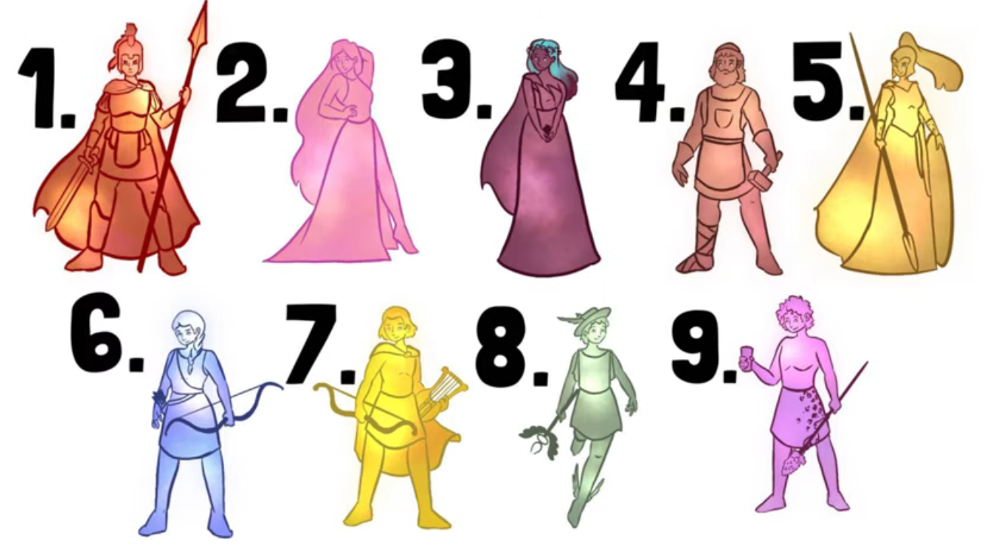
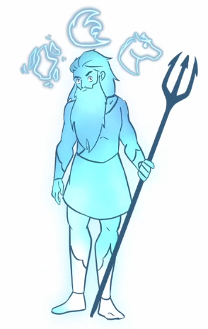
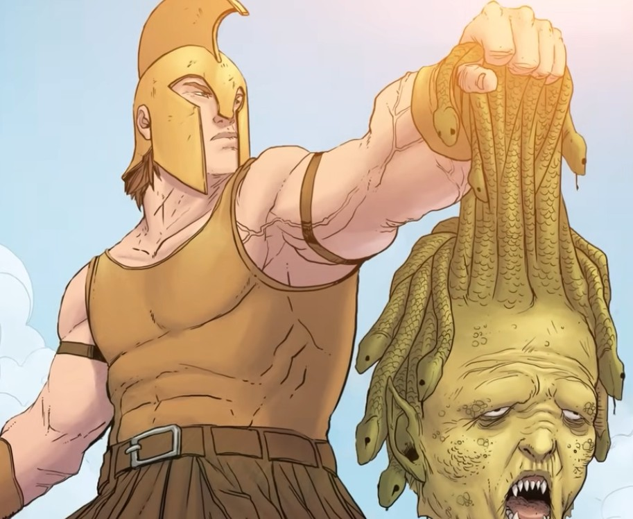
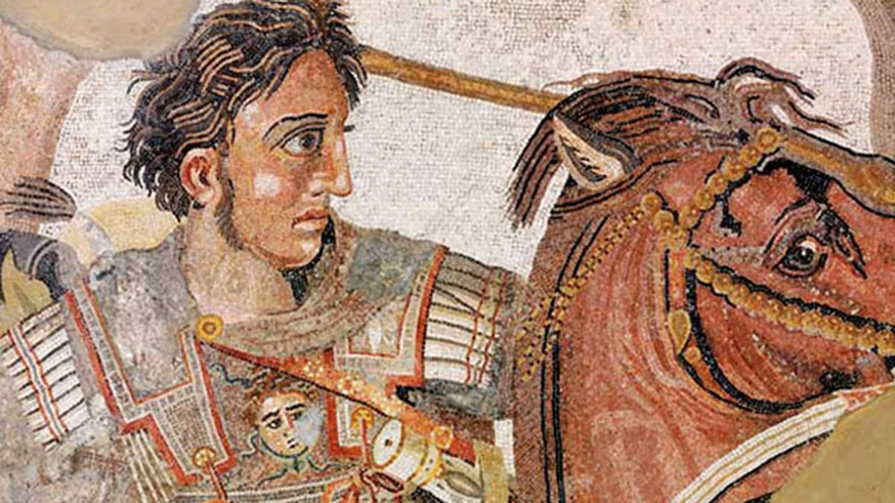

Zeus es el hijo más joven de Cronos, el rey de los dioses, siendo atribuido con funciones como
dios de los cielos, los rayos y del destino, además de ser el padre de muchos de los dioses olímpicos y conocido por muchos
como la cabeza del panteón griego.
Familia de Zeus
Hablar sobre la familia de Zeus es complejo, especialmente por el lado de la descendencia, ya que tuvo muchos hijos a lo largo del tiempo.
Incluso hay versiones de los mitos sobre los nacimientos de varios dioses a los que se atribuye a Zeus como padre, siendo algunos
ejemplos Hefesto, quien normalmente se conoce por haber nacido solo de Hera, o Afrodita, conocida por haber nacido tras la castración del dios Urano.

Por el lado de los hermanos, Zeus es el hijo más joven de Cronos y Rea, siendo hermano directo de dioses como
Hades, Poseidón, Hera, Deméter y Hestia.
Hestia
Deméter
Hera
Hades
Poseidón

Linaje Mortal de Zeus
Sin duda, cuando pensamos en Zeus, los primeros pensamientos que vienen son sobre sus constantes
amoríos con varias diosas y mortales, lo que conllevó al nacimiento de grandes héroes de la mitología,
como Heracles y Perseo.
Heracles llegó a ascender al Olimpo como deidad tras su muerte.
Heracles
Perseo

Hasta el punto llegó su influencia que muchos decían llamarse hijos de Zeus para poseer mayor prestigio, siendo el caso
más famoso Alejandro Magno, cuyo padre, Filipo II de Macedonia, decía descender de Heracles,
mientras que su madre, Olimpia de Epiro, decía descender del héroe Aquiles.

Mitos de Zeus
Los mitos de Zeus son variados, incluyendo su participación en la
Titanomaquia y la Gigantomaquia, saliendo victorioso en ambos enfrentamientos. El primero terminó con
los titanes en el Tártaro, a excepción de Atlas, quien terminó sosteniendo la bóveda celeste
por toda la eternidad. El segundo terminó con los gigantes muertos.
Castigos de Zeus
Muchas veces, Zeus tuvo que demostrar su autoridad como rey de los dioses y cabeza del panteón,
no solo con otras divinidades, sino también con mortales. Dos de ellos fueron enviados al Tártaro por el propio Zeus:
Ixión, quien deshonró el deber de hospitalidad ofrecido por Zeus, y el titán Prometeo, por haber robado el fuego para la humanidad.